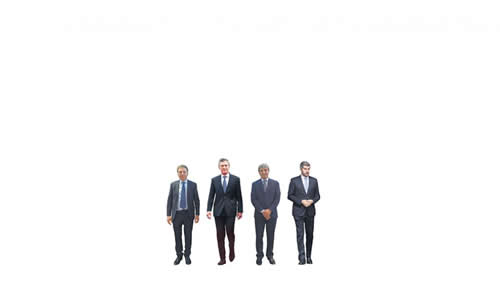

Real Chubut - Agencia de Noticias


El gobierno devaluado

No consiguió incorporar ninguna cara nueva al reducido gabinete, ni tampoco convencer a “los mercados” con la promesa del “déficit cero”. Tras los anuncios, el dólar volvió a rozar los 40 pesos
La culpa es del otro. En plena corrida cambiaria, el presidente Mauricio Macri dio un segundo mensaje grabado en el que anunció el recorte a la mitad de su Gabinete y el retorno de las retenciones a las exportaciones. Entre suspiros estudiados, el mandatario sostuvo que no la pasaba tan mal desde su secuestro a principios de los noventa y le echó la culpa de la crisis a una larga lista de factores: la corrupción, la pesada herencia, la economía global, la oposición y hasta a los argentinos. No hubo una sola autocrítica a las medidas económicas que resolvió su Gobierno. Luego de su discurso, comunicaron que cesaron de existir los ministerios de Salud, de Trabajo, el de Ciencia y Tecnología, Cultura, Energía, Turismo, Ambiente y Agroindustria. Fueron confirmados todos los funcionarios en sus cargos, excepto los vicejefes de Gabinete Mario Quintana y Gustavo Lopetegui, que fueron reemplazados por Andrés Ibarra, ex ministro de Modernización. Lopetegui seguirá como asesor. Quintana declinó continuar en un puesto menor. Se trata del final de una era para el gobierno de Macri, aunque nadie sabe si es el último cambio que sufrirá su gabinete.
El discurso de Macri estaba previsto para antes de la apertura de la cotización del dólar, cerca de las 8.30. No obstante, sin explicaciones, se fue demorando y finalmente arrancó 15 minutos antes de que abriera el mercado cambiario, al que Macri dijo que le hablaba “desde el corazón”. “Sé perfectamente todas las cosas que deben estar pensando y sintiendo, y las sé porque yo también lo siento”, comenzó en un discurso que buscó tener momentos emotivos. En verdad, el tono que predominó fue tirando a fúnebre.
Macri recurrió a una serie de extensos planteos para deslindar responsabilidades sobre la crisis económica actual (a la que llamó por primera vez “crisis” y hasta “emergencia”). Insistió que lo que pasa es “por cuestiones que están fuera de nuestro control”. Enumeró desde la sequía, pasando por la pesada herencia hasta la guerra comercial de China con Estados Unidos. También culpó a la oposición porque “como argentinos no fuimos capaces de mostrar unidad” y cuestionó la ley que moderaba los aumentos de tarifa y él que vetó. Y además responsabilizó a la población: “Durante mucho tiempo los argentinos no pudimos tomar conciencia del desfasaje de nuestras cuentas”, los retó.
Usó reiteradas veces la palabra “corrupción” e intentó volver a poner el eje en la causa de los cuadernos como motor de la crisis actual. Curiosamente, la corrida empezó en abril, meses antes de que comenzara esa causa judicial. “En estos meses, se desataron todas las tormentas juntas”, terminó de justificarse Macri, al que no se le escuchó ninguna autocrítica.
Sí se permitió explicar lo mal que la estaba pasando él. “Para mí no es fácil. Quiero que sepan que estos fueron los peores cinco meses de mi vida después de mi secuestro”, contó. “¿Creen que me hace feliz no darle los recursos a la gente que más lo necesita? ¿Quién puede pensar que yo no querría pagarles a todos los profesores universitarios todo lo que piden? Claro que querría darles más aumento a los profesores universitarios, también a los enfermeros, a los policías”, dijo.
Y por último, luego de mencionar las medidas económicas que quedaron a cargo de Nicolás Dujovne (ver aparte), anunció que recortaría el gabinete: “En cuanto al equipo de gobierno, he tomado la decisión de reducir la cantidad de ministerios a menos de la mitad. Los gobiernos tienen distintos momentos, y en cada momento tal vez se requieren equipos diferentes”, fue toda la explicación que dio. “He decidió compactar más mi equipo para así poder dar una respuesta más focalizada en la agenda que se viene”, anunció Macri, que terminó su discurso sin dar más detalles de los cambios de gabinete.
Cambios que no cambian
Los detalles llegaron en un comunicado oficial. Allí se anunció que ocho ministerios pasaban a ser secretarías, algunos que generaron mucha polémica como Salud, Trabajo o Ciencia y Tecnología. Todos los ministros aceptaron ser degradados a secretarios, incluso el ex titular de la Sociedad Rural Luis Miguel Etchevehere, quien ahora dependerá del ministro de Producción, Dante Sica, al igual que el secretario de Trabajo, Jorge Triaca. Adolfo Rubinstein será secretario de Salud bajo el ministerio de Desarrollo Social, que conduce Carolina Stanley. Javier Iguacel pasó a ser secretario de Energía bajo la órbita de Hacienda. Alejandro Finocchiaro será el ministro de Educación, Cultura, Ciencia y Tecnología, y tendrá como secretarios a Pablo Avelluto y a Lino Barañao. El ahora secretario de Ambiente Sergio Bergman dependerá de Presidencia al igual que Turismo. Defensa y Seguridad seguirán siendo ministerios separados, sin cambios. Hernán Lombardi, a cargo de los medios públicos, también fue degradado. Lo mismo el Plan Belgrano. Dujovne y Peña siguen en su puesto, pese a las presiones del establishment para que renuncien.
La principal novedad fue la salida de los dos coordinadores de Gabinete, Lopetegui y Quintana, de quien Macri llegó a decir que eran “mis ojos, mis oídos y soy yo”. Lopetegui aceptó un cargo como asesor presidencial. Quintana declinó la oferta de pasar a controlar la participación estatal en las empresas privadas. Puesto menor para quien tenía altas ambiciones política y ahora va de regreso al sector privado. Quien los reemplazará como vicejefe de Gabinete es Andrés Ibarra, quien viene de una larga trayectoria en el Grupo Macri, en Boca y como ministro de Modernización primero en la Ciudad y luego en Nación.
Los que no
El anuncio lució una falta absoluta de nuevos nombres, pese a las innumerables versiones de cambios en el fin de semana. Esto se debe a una importante cantidad de negativas y desacuerdos en torno a quienes podrían haber oxigenado el gabinete. La más comentada en plena crisis cambiaria fue la posible entrada de Carlos Melconian a Economía, pero el economista habría pedido para retornar la cabeza de Luis Caputo y el manejo total de las variables económicas. Algo que, por ahora, en el Gobierno no le concedieron.
Los otros “no” provinieron del radicalismo. Los tres gobernadores radicales Alfredo Cornejo, Gustavo Valdés y Gerardo Morales, sus espadas legislativas Luis Naidenoff y Mario Negri, junto con Ernesto Sanz, pasaron todo el domingo discutiendo los nombres del gabinete con el jefe de Gabinete, Marcos Peña, el ministro del Interior, Rogelio Frigerio, y el titular de Diputados, Emilio Monzó.
A Sanz le ofrecieron Defensa –en la que sigue otro radical Oscar Aguad– y contestó que no. Dijo que se sentiría más cómodo en el Ministerio del Interior. Los radicales codician ese ministerio porque les permitiría afianzar su territorialidad. Frigerio, sorpresivamente, retrucó que no quería ser un obstáculo para el acuerdo. Pero, más tarde, el presidente –que no participó de las reuniones del domingo– le bajó el pulgar a esa opción.
Así las cosas, los radicales se marcharon de Olivos en un cuarto intermedio cerca de las seis de la tarde y volvieron tres horas después. Recalaron en la casa de Alfonso Prat-Gay al que, mientras tomaban Coca-cola, intentaron convencer de que aceptara la Cancillería. Prat-Gay puso condiciones (en teoría, intervenir en las negociaciones del FMI) que no aceptaron los macristas. Por ahora, sigue Faurie.
También los radicales tentaron a Martín Lousteau con el ministerio de Educación, pero al dirigente porteño no le sedujo la posibilidad de volver a ocupar una cartera en pleno conflicto con docentes universitarios, becarios del Conicet, entre otros. En suma, el Gabinete que nació ayer se construyó a fuerza de dirigentes que rechazaron cargos.
Fuente: Pagina12